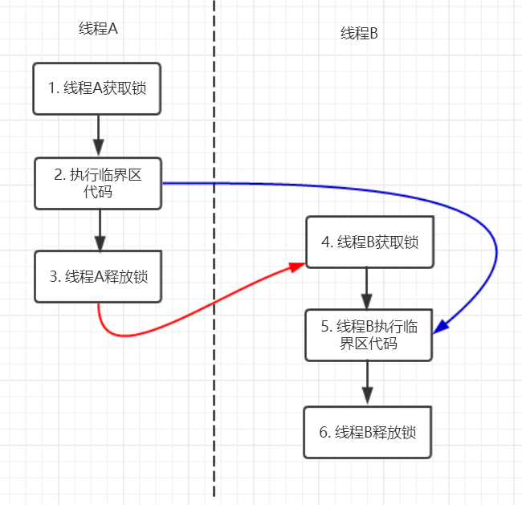

一、synchronized简介
在学习知识前，我们先来看一个现象：
1 | public class SynchronizedDemo implements Runnable { |
开启了10个线程，每个线程都累加了1000000次，如果结果正确的话自然而然总数就应该是10 * 1000000 = 10000000。可就运行多次结果都不是这个数，而且每次运行结果都不一样。这是为什么了？有什么解决方案了？这就是我们今天要聊的事情。
在上一篇博文中我们已经了解了java内存模型的一些知识，并且已经知道出现线程安全的主要来源于JMM的设计，主要集中在主内存和线程的工作内存而导致的内存可见性问题，以及重排序导致的问题，进一步知道了happens-before规则。线程运行时拥有自己的栈空间，会在自己的栈空间运行，如果多线程间没有共享的数据也就是说多线程间并没有协作完成一件事情，那么，多线程就不能发挥优势，不能带来巨大的价值。那么共享数据的线程安全问题怎样处理？很自然而然的想法就是每一个线程依次去读写这个共享变量，这样就不会有任何数据安全的问题，因为每个线程所操作的都是当前最新的版本数据。那么，在java关键字synchronized就具有使每个线程依次排队操作共享变量的功能。很显然，这种同步机制效率很低，但synchronized是其他并发容器实现的基础，对它的理解也会大大提升对并发编程的感觉，从功利的角度来说，这也是面试高频的考点。好了，下面，就来具体说说这个关键字。
二、synchronized实现原理
在java代码中使用synchronized可是使用在代码块和方法中，根据Synchronized用的位置可以有这些使用场景：

如图，synchronized可以用在方法上也可以使用在代码块中，其中方法是实例方法和静态方法分别锁的是该类的实例对象和该类的对象。而使用在代码块中也可以分为三种，具体的可以看上面的表格。这里的需要注意的是：如果锁的是类对象的话，尽管new多个实例对象，但他们仍然是属于同一个类依然会被锁住，即线程之间保证同步关系。
现在我们已经知道了怎样synchronized了，看起来很简单，拥有了这个关键字就真的可以在并发编程中得心应手了吗？爱学的你，就真的不想知道synchronized底层是怎样实现了吗？
2.1、对象锁（monitor）机制
现在我们来看看synchronized的具体底层实现。先写一个简单的demo:
1 | public class SynchronizedDemo { |
上面的代码中有一个同步代码块，锁住的是类对象，并且还有一个同步静态方法，锁住的依然是该类的类对象。编译之后，切换到SynchronizedDemo.class的同级目录之后，然后用javap -v SynchronizedDemo.class查看字节码文件：

如图，上面用黄色高亮的部分就是需要注意的部分了，这也是添Synchronized关键字之后独有的。执行同步代码块后首先要先执行monitorenter指令，退出的时候monitorexit指令。通过分析之后可以看出，使用Synchronized进行同步，其关键就是必须要对对象的监视器monitor进行获取，当线程获取monitor后才能继续往下执行，否则就只能等待。而这个获取的过程是互斥的，即同一时刻只有一个线程能够获取到monitor。上面的demo中在执行完同步代码块之后紧接着再会去执行一个静态同步方法，而这个方法锁的对象依然就这个类对象，那么这个正在执行的线程还需要获取该锁吗？答案是不必的，从上图中就可以看出来，执行静态同步方法的时候就只有一条monitorexit指令，并没有monitorenter获取锁的指令。这就是锁的重入性，即在同一锁程中，线程不需要再次获取同一把锁。Synchronized先天具有重入性。每个对象拥有一个计数器，当线程获取该对象锁后，计数器就会加一，释放锁后就会将计数器减一。
任意一个对象都拥有自己的监视器，当这个对象由同步块或者这个对象的同步方法调用时，执行方法的线程必须先获取该对象的监视器才能进入同步块和同步方法，如果没有获取到监视器的线程将会被阻塞在同步块和同步方法的入口处，进入到BLOCKED状态（关于线程的状态可以看 这篇文章）。
下图表现了对象，对象监视器，同步队列以及执行线程状态之间的关系：

该图可以看出，任意线程对Object的访问，首先要获得Object的监视器，如果获取失败，该线程就进入同步状态，线程状态变为BLOCKED，当Object的监视器占有者释放后，在同步队列中得线程就会有机会重新获取该监视器。
2.2、synchronized的happens-before关系
在上一篇文章中讨论过 happens-before 规则，抱着学以致用的原则我们现在来看一看Synchronized的happens-before规则，即监视器锁规则：对同一个监视器的解锁，happens-before于对该监视器的加锁。继续来看代码：
1 | public class MonitorDemo { |
该代码的happens-before关系如图所示：

在图中每一个箭头连接的两个节点就代表之间的happens-before关系，黑色的是通过程序顺序规则推导出来，红色的为监视器锁规则推导而出：线程A释放锁happens-before线程B加锁，蓝色的则是通过程序顺序规则和监视器锁规则推测出来happens-befor关系，通过传递性规则进一步推导的happens-before关系。现在我们来重点关注2 happens-before 5，通过这个关系我们可以得出什么？
根据happens-before的定义中的一条:如果A happens-before B，则A的执行结果对B可见，并且A的执行顺序先于B。线程A先对共享变量A进行加一，由2 happens-before 5关系可知线程A的执行结果对线程B可见即线程B所读取到的a的值为1。
2.3、锁获取和锁释放的内存语义
在上一篇文章提到过JMM核心为两个部分：happens-before规则以及内存抽象模型。我们分析完Synchronized的happens-before关系后，还是不太完整的，我们接下来看看基于java内存抽象模型的Synchronized的内存语义。
废话不多说依旧先上图。

从上图可以看出，线程A会首先先从主内存中读取共享变量a=0的值然后将该变量拷贝到自己的本地内存，进行加一操作后，再将该值刷新到主内存，整个过程即为线程A 加锁–>执行临界区代码–>释放锁相对应的内存语义。

线程B获取锁的时候同样会从主内存中共享变量a的值，这个时候就是最新的值1,然后将该值拷贝到线程B的工作内存中去，释放锁的时候同样会重写到主内存中。
从整体上来看，线程A的执行结果（a=1）对线程B是可见的，实现原理为：释放锁的时候会将值刷新到主内存中，其他线程获取锁时会强制从主内存中获取最新的值。另外也验证了2 happens-before 5，2的执行结果对5是可见的。
从横向来看，这就像线程A通过主内存中的共享变量和线程B进行通信，A 告诉 B 我们俩的共享数据现在为1啦，这种线程间的通信机制正好吻合java的内存模型正好是共享内存的并发模型结构。
三、synchronized优化
通过上面的讨论现在我们对Synchronized应该有所印象了，它最大的特征就是在同一时刻只有一个线程能够获得对象的监视器（monitor），从而进入到同步代码块或者同步方法之中，即表现为互斥性（排它性）。这种方式肯定效率低下，每次只能通过一个线程，既然每次只能通过一个，这种形式不能改变的话，那么我们能不能让每次通过的速度变快一点了。打个比方，去收银台付款，之前的方式是，大家都去排队，然后去纸币付款收银员找零，有的时候付款的时候在包里拿出钱包再去拿出钱，这个过程是比较耗时的，然后，支付宝解放了大家去钱包找钱的过程，现在只需要扫描下就可以完成付款了，也省去了收银员跟你找零的时间的了。同样是需要排队，但整个付款的时间大大缩短，是不是整体的效率变高速率变快了？这种优化方式同样可以引申到锁优化上，缩短获取锁的时间，伟大的科学家们也是这样做的，令人钦佩，毕竟java是这么优秀的语言（微笑脸）。
在聊到锁的优化也就是锁的几种状态前，有两个知识点需要先关注：（1）CAS操作 （2）Java对象头，这是理解下面知识的前提条件。
3.1、CAS操作
3.1.1、什么是CAS?
使用锁时，线程获取锁是一种悲观锁策略，即假设每一次执行临界区代码都会产生冲突，所以当前线程获取到锁的时候同时也会阻塞其他线程获取该锁。而CAS操作（又称为无锁操作）是一种乐观锁策略，它假设所有线程访问共享资源的时候不会出现冲突，既然不会出现冲突自然而然就不会阻塞其他线程的操作。因此，线程就不会出现阻塞停顿的状态。那么，如果出现冲突了怎么办？无锁操作是使用**CAS(compare and swap)**又叫做比较交换来鉴别线程是否出现冲突，出现冲突就重试当前操作直到没有冲突为止。
3.1.2、CAS的操作过程
CAS比较交换的过程可以通俗的理解为CAS(V,O,N)，包含三个值分别为：V 内存地址存放的实际值；O 预期的值（旧值）；N 更新的新值。当V和O相同时，也就是说旧值和内存中实际的值相同表明该值没有被其他线程更改过，即该旧值O就是目前来说最新的值了，自然而然可以将新值N赋值给V。反之，V和O不相同，表明该值已经被其他线程改过了则该旧值O不是最新版本的值了，所以不能将新值N赋给V，返回V即可。当多个线程使用CAS操作一个变量是，只有一个线程会成功，并成功更新，其余会失败。失败的线程会重新尝试，当然也可以选择挂起线程
CAS的实现需要硬件指令集的支撑，在JDK1.5后虚拟机才可以使用处理器提供的CMPXCHG指令实现。
Synchronized VS CAS
元老级的Synchronized(未优化前)最主要的问题是：在存在线程竞争的情况下会出现线程阻塞和唤醒锁带来的性能问题，因为这是一种互斥同步（阻塞同步）。而CAS并不是武断的间线程挂起，当CAS操作失败后会进行一定的尝试，而非进行耗时的挂起唤醒的操作，因此也叫做非阻塞同步。这是两者主要的区别。
3.1.3、CAS的应用场景
在J.U.C包中利用CAS实现类有很多，可以说是支撑起整个concurrency包的实现，在Lock实现中会有CAS改变state变量，在atomic包中的实现类也几乎都是用CAS实现，关于这些具体的实现场景在之后会详细聊聊，现在有个印象就好了（微笑脸）。
3.1.4、CAS的问题
- ABA问题
因为CAS会检查旧值有没有变化，这里存在这样一个有意思的问题。比如一个旧值A变为了成B，然后再变成A，刚好在做CAS时检查发现旧值并没有变化依然为A，但是实际上的确发生了变化。解决方案可以沿袭数据库中常用的乐观锁方式，添加一个版本号可以解决。原来的变化路径A->B->A就变成了1A->2B->3C。java这么优秀的语言，当然在java 1.5后的atomic包中提供了AtomicStampedReference来解决ABA问题，解决思路就是这样的。 - 自旋时间过长
使用CAS时非阻塞同步，也就是说不会将线程挂起，会自旋（无非就是一个死循环）进行下一次尝试，如果这里自旋时间过长对性能是很大的消耗。如果JVM能支持处理器提供的pause指令，那么在效率上会有一定的提升。 - 只能保证一个共享变量的原子操作
当对一个共享变量执行操作时CAS能保证其原子性，如果对多个共享变量进行操作,CAS就不能保证其原子性。有一个解决方案是利用对象整合多个共享变量，即一个类中的成员变量就是这几个共享变量。然后将这个对象做CAS操作就可以保证其原子性。atomic中提供了AtomicReference来保证引用对象之间的原子性。
3.2、Java对象头
在同步的时候是获取对象的monitor,即获取到对象的锁。那么对象的锁怎么理解？无非就是类似对对象的一个标志，那么这个标志就是存放在Java对象的对象头。Java对象头里的Mark Word里默认的存放的对象的Hashcode,分代年龄和锁标记位。32为JVM Mark Word默认存储结构为（注:java对象头以及下面的锁状态变化摘自《java并发编程的艺术》一书，该书我认为写的足够好，就没在自己组织语言班门弄斧了）：

如图在Mark Word会默认存放hasdcode，年龄值以及锁标志位等信息。
Java SE 1.6中，锁一共有4种状态，级别从低到高依次是：无锁状态、偏向锁状态、轻量级锁状态和重量级锁状态，这几个状态会随着竞争情况逐渐升级。锁可以升级但不能降级，意味着偏向锁升级成轻量级锁后不能降级成偏向锁。这种锁升级却不能降级的策略，目的是为了提高获得锁和释放锁的效率。对象的MarkWord变化为下图：

3.3、偏向锁
HotSpot的作者经过研究发现，大多数情况下，锁不仅不存在多线程竞争，而且总是由同一线程多次获得，为了让线程获得锁的代价更低而引入了偏向锁。
3.3.1、偏向锁的获取
当一个线程访问同步块并获取锁时，会在对象头和栈帧中的锁记录里存储锁偏向的线程ID，以后该线程在进入和退出同步块时不需要进行CAS操作来加锁和解锁，只需简单地测试一下对象头的Mark Word里是否存储着指向当前线程的偏向锁。如果测试成功，表示线程已经获得了锁。如果测试失败，则需要再测试一下Mark Word中偏向锁的标识是否设置成1（表示当前是偏向锁）：如果没有设置，则使用CAS竞争锁；如果设置了，则尝试使用CAS将对象头的偏向锁指向当前线程。
3.3.2、偏向锁的撤销
偏向锁使用了一种等到竞争出现才释放锁的机制，所以当其他线程尝试竞争偏向锁时，持有偏向锁的线程才会释放锁。

如图，偏向锁的撤销，需要等待全局安全点（在这个时间点上没有正在执行的字节码）。它会首先暂停拥有偏向锁的线程，然后检查持有偏向锁的线程是否活着，如果线程不处于活动状态，则将对象头设置成无锁状态；如果线程仍然活着，拥有偏向锁的栈会被执行，遍历偏向对象的锁记录，栈中的锁记录和对象头的Mark Word要么重新偏向于其他线程，要么恢复到无锁或者标记对象不适合作为偏向锁，最后唤醒暂停的线程。
下图线程1展示了偏向锁获取的过程，线程2展示了偏向锁撤销的过程。

3.3.2、如何关闭偏向锁
偏向锁在Java 6和Java 7里是默认启用的，但是它在应用程序启动几秒钟之后才激活，如有必要可以使用JVM参数来关闭延迟：-XX:BiasedLockingStartupDelay=0。如果你确定应用程序里所有的锁通常情况下处于竞争状态，可以通过JVM参数关闭偏向锁：-XX:-UseBiasedLocking=false，那么程序默认会进入轻量级锁状态
3.4、轻量级锁
3.4.1、轻量级锁的加锁
线程在执行同步块之前，JVM会先在当前线程的栈桢中创建用于存储锁记录的空间，并将对象头中的Mark Word复制到锁记录中，官方称为Displaced Mark Word。然后线程尝试使用CAS将对象头中的Mark Word替换为指向锁记录的指针。如果成功，当前线程获得锁，如果失败，表示其他线程竞争锁，当前线程便尝试使用自旋来获取锁。
3.4.2、轻量级锁的加锁
轻量级解锁时，会使用原子的CAS操作将Displaced Mark Word替换回到对象头，如果成功，则表示没有竞争发生。如果失败，表示当前锁存在竞争，锁就会膨胀成重量级锁。下图是两个线程同时争夺锁，导致锁膨胀的流程图。

因为自旋会消耗CPU，为了避免无用的自旋（比如获得锁的线程被阻塞住了），一旦锁升级成重量级锁，就不会再恢复到轻量级锁状态。当锁处于这个状态下，其他线程试图获取锁时，都会被阻塞住，当持有锁的线程释放锁之后会唤醒这些线程，被唤醒的线程就会进行新一轮的夺锁之争。
3.5、各种锁的比较

四、一个例子
1 | public class SynchronizedDemo implements Runnable { |
开启十个线程，每个线程在原值上累加1000000次，最终正确的结果为10X1000000=10000000，这里能够计算出正确的结果是因为在做累加操作时使用了同步代码块，这样就能保证每个线程所获得共享变量的值都是当前最新的值，如果不使用同步的话，就可能会出现A线程累加后，而B线程做累加操作有可能是使用原来的就值，即“脏值”。这样，就导致最终的计算结果不是正确的。而使用Syncnized就可能保证内存可见性，保证每个线程都是操作的最新值。这里只是一个示例性的demo，聪明的你，还有其他办法吗？